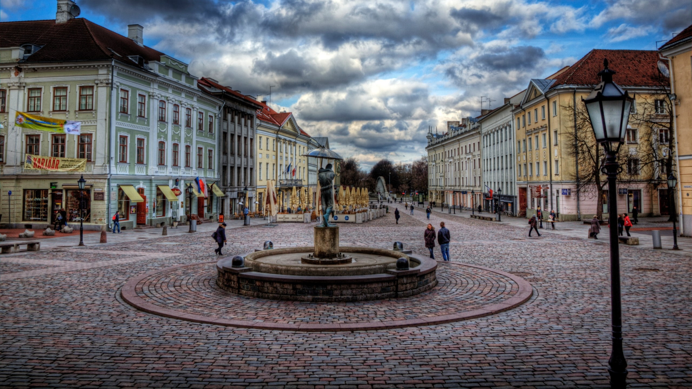
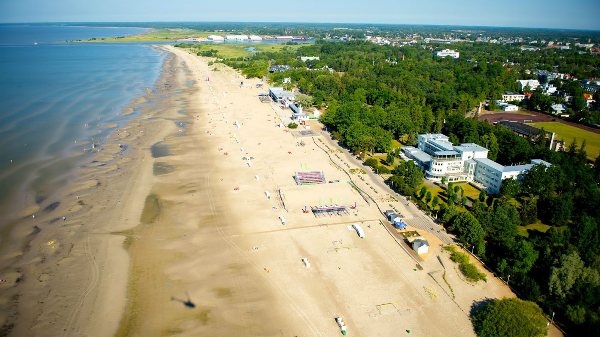

Visita Estonia y no vas a arrepentirte

Estonia, oficialmente la República de Estonia (estonio: Eesti Vabariik), es un país
en la costa oriental del mar Báltico en el norte de Europa. Limita al norte con el
Golfo de Finlandia con Finlandia al otro lado, al oeste con el Mar Báltico con Suecia
al otro lado, al sur con Letonia , y al este con el lago Peipus y Rusia.
El estado soberano
de Estonia es una república parlamentaria unitaria
democrática dividida en quince condados. Su capital y ciudad más grande es Tallin.
¿Por qué Estonia?
Este pequeño país ubicado a orillas del mar báltico se ha destacado en practicamente en todos los indices de calidad de vida,crecimiento economico e incluso encabezando el unforme PISA(Programme for International Student Assessmen), el cual los ubica como los mejores de Europa y del mundo solo por detrás de Singapur y China. De hecho los estonios han destronado a sus vecinos los finlandes quienes por decadas podian jactarse de tener el mejor sistema educativo del mundo.
Los habitantes de este impresionante país no solo hablan su idioma natural el estonio,sino que ademas hablan fluido el ingles,se estima que el 90% de los jovenes estonios hablan un muy buen inglés,algo que los ayuda a la hora de hacer negocios con el resto del mundo pero adémas esto es una ventaja a tener si decides visitarlos puesto que no tendrás dificultad alguna a la hora de comunicarte.
Leer más¿Donde ir en Estonia?
- Tallin

Sin lugar a dudas el primer lugar a visitar en Estonia es su capital Tallin,es uno de los centros urbanos
medievales mejor conservados del mundo y fue el hogar de ricos comerciantes de Dinamarca y
Alemania en el siglo XIII. El casco antiguo, con sus calles empedradas e iglesias medievales, se convirtió en Patrimonio de la Humanidad por la UNESCO en 1997.Vea el arte y los arcos góticos en el Ayuntamiento
de Tallin, luego pasee por el resto del casco antiguo, eche un vistazo a las iglesias, la catedral ortodoxa rusa y la vista digna de una postal desde la plataforma Patkuli. Hacer turismo aquí se siente como viajar en el tiempo. - Tartu

La ciudad de Tartu es considerada el centro intelectual del país, gracias a la impresionante y conocida Universidad de Tartu. Entre la universidad y el hecho de que Tartu es la ciudad más antigua de la nación, esta ciudad es claramente un destino interesante. Su atractivo centro está bordeado de edificios de diseño clásico del siglo XVIII, muchos de los cuales han sido utilizados para usos innovadores. Una de las atracciones más geniales de Tartu es el barrio de la sopa. En el barrio de las sopas, cada calle lleva el nombre de los ingredientes de la sopa, como papas, frijoles y guisantes. Viejas casas de madera bordean estas calles, que están justo al lado del río Emajõgi.
- Parque nacional de Lahemaa

Uno de los parques nacionales más populares de Estonia es Lahemaa. Dado que está a solo una hora en auto de la capital, es el viaje de un día ideal. Viru Raba, o Viru Bog, es una parte imperdible del parque. Los árboles sobresalen del suelo pantanoso, y existe una clara calidad etérea. Para facilitar la exploración de Viru Bog, hay un paseo marítimo de 5 km que generalmente está seco, lo que lo mantiene fuera del agua pero lo suficientemente cerca como para admirar el paisaje. En el centro del parque se encuentra Sagadi Village, un lugar fascinante donde puede recorrer Sagadi Manor y aprender más sobre la cultura y la historia de la región.
- Parnu

Ubicado perfectamente en el borde de su pequeña entrada costera en el Golfo de Riga, Parnu se completa con uno de los mejores tramos de arena blanca nacarada del Báltico. Está respaldado por el totalmente nuevo e indeleblemente animado Beach Promenade, donde las fuentes balbucean junto a los restaurantes al aire libre y los cursos de una excelente pista para bicicletas. Y en el centro de la ciudad, los restos de un boom Art Deco en los años 20 añaden un toque de clase al complejo, los spas se levantan inesperadamente en las esquinas de las calles, la calle Ruutli suena con una melodía nocturna y encantadoras villas de madera. salpican las afueras.
- Lennusadam

Muy interesante por la exhibición y por los elementos interactivos que tienen disponibles para todas las edades. Se puede visitar por dentro un submarino, y conocer la historia de diversos veleros y máquinas de guerra de la época. Además, afuera del museo hay una exhibición de barcos reales a los cuales se puede subir. Este galardonado museo en Tallin alberga alrededor de 200 artefactos y embarcaciones marítimas auténticas en un histórico hangar de hidroaviones, que cuenta con la primera cúpula de hormigón de alto volumen, sin columnas y de capa fina. Esta atracción incluye un submarino de la década de 1930, un rompehielos a vapor de 100 años y los restos del barco más antiguo de Estonia en la colección permanente del museo. También puedes probar un uniforme azul marino para una foto de recuerdo y aprender el arte de doblar aviones de papel. Una variedad de simuladores interactivos ofrece a los huéspedes una experiencia aún más inmersiva, mostrándoles cómo es volar un avión.
Mira más lugares para visitar
Historia
El territorio de Estonia ha estado habitado desde al menos 9,000 AC. Los antiguos estonios se convirtieron en algunos de los últimos paganos europeos en adoptar el cristianismo, después de la Cruzada de Livonia en el siglo XIII. Después de siglos de gobierno sucesivo por alemanes, daneses, suecos, polacos y rusos, una identidad nacional estonia distintiva comenzó a surgir en el siglo XIX y principios del XX. Esto culminó con la independencia de Rusia en 1920 después de una breve Guerra de la Independencia al final de la Primera Guerra Mundial. Inicialmente democrática antes de la Gran Depresión, Estonia experimentó un gobierno autoritario desde 1934 durante la Era del Silencio. Durante la Segunda Guerra Mundial (1939–1945), Estonia fue disputada y ocupada repetidamente por la Unión Soviética y Alemania, y finalmente se incorporó a la primera. Después de la pérdida de su independencia de facto, la continuidad del estado de jure de Estonia fue preservada por los representantes diplomáticos y el gobierno en el exilio. En 1987 comenzó la pacífica Revolución del canto contra el dominio soviético, que resultó en la restauración de la independencia de facto el 20 de agosto de 1991.
Leer más¿Te interesa viajar a Estonia?
Podemos ayudarte!
Contactanos